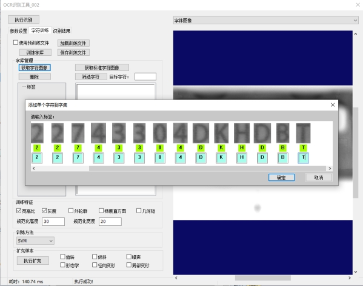

针对工业产品的字符识别需求，本工具可以对单一字符进行多场景训练来获得相应的字体模板并加入字符模板列表。最后通过实时图像与模板列表中的字符进行匹配，达到字符识别的目的。图1(a)即原图像和相应的识别区域，图1(b)即为本工具的字符识别结果。
| 分类 | 参数名称 | 参数描述 |
|---|---|---|
| 属性窗口 | 启用ROI | 是否采用识别区域，若为否，则为全图匹配识别。 |
| 识别区域 | 显示实时图像上需要进行识别的矩形区域，仅在启用ROI为是时启用。 | |
| 字符极性 | 黑色字体还是白色字体，根据实际情况选择。 | |
| 二值化模式 | 图像质量较好时，优先使用全局自适应；图像质量较好且对效率要求较高时，优先使用固定阈值；图像质量较差(光照不均、噪声干扰、低对比度等)时，优先使用局部自适应。 | |
| 窗口高度 | 二值化模式为局部自适应时使用，取值范围为[3,10000]的整数。 | |
| 窗口宽度 | 二值化模式为局部自适应时使用，二值化参数为邻域窗口宽度，参数值为[3,10000]的整数。 | |
| 固定阈值 | 二值化模式为固定阈值时使用，二值化参数为固定阈值大小，值域为[0,255]。 | |
| 待分割行 | 对候选字符行进行选择。当选择指定行时，需要输入行编号，范围为[0,100]。默认行为高度最大行。 | |
| 行编号 | 当选择指定行时，需要指定行编号。 | |
| 行膨胀尺寸 | 适用于点阵图像，将断开的行进行连接。行膨胀尺寸为[0,2147483647]的整数，默认值为0的整数。 | |
| 行筛选阈值 | 图像水平灰度投影曲线中大于行筛选阈值的区域被认为是可能的字符行，范围为[0,255]的整数。 | |
| 行切割阈值 | 对已确定的字符行进行上下位置调整，防止字符如Q被过分割，参数范围为[-255,255]的整数。 | |
| 行是否倾斜 | 当字符行不为水平时，需要开启此选项。行倾斜矫正搜索角度默认范围为[-45,45]。 | |
| 角度最小值 | 设置行倾斜矫正搜索角度最小值。 | |
| 角度最大值 | 设置行倾斜矫正搜索角度最大值。 | |
| 自动分割 | 对字符分割是否开启自动参数。 | |
| 最大宽高比 | 设定分割字符的最大宽高比。当获得的字符宽高比大于该值时，将进行强制分割，范围为[0,100]。 | |
| 字符膨胀尺寸 | 适用于点阵字符，将分割开的字符点左右连接。字符膨胀尺寸为[0,10000]的整数，默认值为0。 | |
| 字符筛选阈值 | 用于筛选候选字符。投影曲线中高于该阈值的区间即为候选字符区域。值域为[0,255]，默认值为20。 | |
| 字符连接尺寸 | 用于连接单个字符上下部分，比如字符i，j。值域为[0,10000]的整数，默认值为0。 | |
| 干扰强度阈值 | 用于筛选候选字符。投影曲线中投影值大于字符筛选阈值，并且高于干扰强度阈值的才是最终分割字符，否则不是。值域为[0,255]，默认值为10。 | |
| 干扰宽度阈值 | 用于筛选候选字符。投影曲线中投影值大于字符筛选阈值，并且宽度高于干扰宽度阈值的才是最终分割字符，否则不是；值域为[0,255]，默认值为0。 | |
| 字体是否倾斜 | 当字体为倾斜字体时，需要设置此选项。斜体字矫正搜索角度默认范围为[-45,45]。 | |
| 倾斜最小角度 | 设置斜体字矫正搜索角度最小值。 | |
| 倾斜最大角度 | 设置斜体字矫正搜索角度最大值。 | |
| 是否固定个数 | 识别的字符是否固定个数，默认为不固定个数。 当字符行中含有噪声时，可以选择启用待识别行字符个数参数来增强文本行识别结果的鲁棒性。 | |
| 识别字符个数 | 要识别固定个数的字符，需要设置此值。 | |
| 识别字符串匹配分数下限 | 识别出的字符匹配分数，如果低于分数则运行失败。 | |
| 图像窗口 | 识别区域 | 显示实时图像上参与OCR识别的矩形区域。与属性窗口中打开“启用ROI”后出现的“识别区域”是同一个参数。 |
| 数据链 | 输入图像 | 用来实时识别的输入图像。 |
| 二维线性变换 | 输入的定位二维线性变换结果，以根据其变换相应的识别区域 | |
| 高级界面 | 执行识别 | 根据加载的模板，对输入的图像进行字符识别，执行识别会有相应的错误码。 |
| 训练字库 | 对输入的图片进行训练，见训练步骤。 | |
| 加载训练文件 | 加载.gmc文件。 | |
| 保存训练文件 | 将训练好的模板保存成.gmc文件。 | |
| 获取字符图像 | 训练时，需要对对话框里面的字符图像下的编辑框中输入对应字符标签，然进行训练。 | |
| 样本扩充 | 如果字库中样本偏少，可以对字库进行样本扩充，提供裁剪、旋转和灰度变化三种扩充方式。 | |
| 删除 | 删除字库里面的某个或者所有的字库。 | |
| 筛选字符 | 对指定的某个字符进行筛选，方便查看。 | |
| 字符极性 | 黑色字体还是白色字体，根据实际情况选择。 | |
| 二值化模式 | 图像质量较好时，优先使用全局自适应；图像质量较好且对效率要求较高时，优先使用固定阈值；图像质量较差(光照不均、噪声干扰、低对比度等)时，优先使用局部自适应。 | |
| 窗口高度 | 二值化模式为局部自适应时使用，取值范围为[3,10000]的整数。 | |
| 窗口宽度 | 二值化模式为局部自适应时使用，二值化参数为邻域窗口宽度，参数值为[3,10000]的整数。 | |
| 固定阈值 | 二值化模式为固定阈值时使用，二值化参数为固定阈值大小，值域为[0,255]。 | |
| 分割行 | 对候选字符行进行选择。当选择指定行时，需要输入行编号，范围为[0,100]。默认行为高度最大行。 | |
| 行编号 | 当选择指定行时，需要指定行编号。 | |
| 行膨胀尺寸 | 适用于点阵图像，将断开的行进行连接。行膨胀尺寸为[0,10000]的整数，默认值为0的整数。 | |
| 行筛选阈值 | 图像水平灰度投影曲线中大于行筛选阈值的区域被认为是可能的字符行，范围为[0,255]的整数。 | |
| 行切割阈值 | 对已确定的字符行进行上下位置调整，防止字符如Q被过分割，参数范围为[-255,255]的整数。 | |
| 行是否倾斜 | 当字符行不为水平时，需要开启此选项。行倾斜矫正搜索角度默认范围为[-45,45]。 | |
| 角度最小值 | 设置行倾斜矫正搜索角度最小值。 | |
| 角度最大值 | 设置行倾斜矫正搜索角度最大值。 | |
| 自动分割 | 对字符分割是否开启自动参数。 | |
| 最大宽高比 | 设定分割字符的最大宽高比。当获得的字符宽高比大于该值时，将进行强制分割，范围为[0,100]。 | |
| 字符膨胀尺寸 | 适用于点阵字符，将分割开的字符点左右连接。字符膨胀尺寸为[0,10000]的整数，默认值为0。 | |
| 字符筛选阈值 | 用于筛选候选字符。投影曲线中高于该阈值的区间即为候选字符区域。值域为[0,255]，默认值为20。 | |
| 字符连接尺寸 | 用于连接单个字符上下部分，比如字符i，j。值域为[0,10000]的整数，默认值为0。 | |
| 干扰强度阈值 | 用于筛选候选字符。投影曲线中投影值大于字符筛选阈值，并且高于干扰强度阈值的才是最终分割字符，否则不是。值域为[0,255]，默认值为10。 | |
| 干扰宽度阈值 | 用于筛选候选字符。投影曲线中投影值大于字符筛选阈值，并且宽度高于干扰宽度阈值的才是最终分割字符，否则不是；值域为[0,255]，默认值为0。 | |
| 字体是否倾斜 | 当字体为倾斜字体时，需要设置此选项。斜体字矫正搜索角度默认范围为[-45,45]。 | |
| 倾斜最小角度 | 设置斜体字矫正搜索角度最小值。 | |
| 倾斜最大角度 | 设置斜体字矫正搜索角度最大值。 | |
| 是否固定个数 | 识别的字符是否固定个数，默认为不固定个数。 当字符行中含有噪声时，可以选择启用待识别行字符个数参数来增强文本行识别结果的鲁棒性。 | |
| 识别字符个数 | 要识别固定个数的字符，需要设置此值。 | |
| 字符极性 | 黑色字体还是白色字体，根据实际情况选择。 | |
| 二值化模式 | 图像质量较好时，优先使用全局自适应；图像质量较好且对效率要求较高时，优先使用固定阈值；图像质量较差(光照不均、噪声干扰、低对比度等)时，优先使用局部自适应。 | |
| 窗口高度 | 二值化模式为局部自适应时使用，取值范围为[3,10000]的整数。 | |
| 窗口宽度 | 二值化模式为局部自适应时使用，二值化参数为邻域窗口宽度，参数值为[3,10000]的整数。 | |
| 固定阈值 | 二值化模式为固定阈值时使用，二值化参数为固定阈值大小，值域为[0,255]。 | |
| 待分割行 | 对候选字符行进行选择。当选择指定行时，需要输入行编号，范围为[0,100]。默认行为高度最大行。 | |
| 行号 | 当选择指定行时，需要指定行编号。 |
| 分类 | 参数名称 | 参数描述 |
|---|---|---|
| 监视窗口 | 输入图像 | 输入图像宽度、高度、像素大小。 |
| 识别字符串 | 识别出来的字符串。 | |
| 识别字符串个数 | 识别的字符串个数。 | |
| 识别结果 | 识别字符串结果，以字符串数组的形式给出。 | |
| 识别字符串匹配分数 | 指字符串的匹配分数，以分数的数组形式给出，与字符串数组一一对应。 | |
| 执行结果 | 工具执行结果。 | |
| 执行时间 | 工具执行时间。 | |
| 图像窗口 | 识别结果 | 以包围识别出的单字符的矩形GUI标识出字符所在位置。 |
| 执行结果 | 显示工具执行结果，执行成功显示“OK”，执行失败显示“NG”，同监视窗口的执行结果参数。 | |
| 数据链 | 识别字符串个数 | 识别的字符串个数。 |
| 识别字符串 | 识别出来的字符串。 | |
| 识别字符串匹配分数 | 识别出来的字符串匹配程度。 |
错误代码的含义，如下表：
表1 错误码含义
| 错误码 | 含义 |
|---|---|
| 1 | 输入图像无效 |
| 2 | ROI区域无效 |
| 3 | 内存申请失败 |
| 4 | 无效的输入参数 |
| 5 | 二值化参数设置错误 |
| 6 | 二值化执行失败 |
| 7 | 行校正失败 |
| 8 | 获取分割行失败 |
| 9 | 字符分割失败 |
| 10 | 训练特征与勾选特征不匹配 |
| 11 | 执行失败 |
方法一：
直接加载训练文件，主要包括自训练文件和预训练文件；预训练文件是.stc文件,见安装目录下面的Plugins\ocr文件夹；自训练文件是.gmc文件，可以通过开启“使用预训练文件”加载预训练文件 。见图2加载自/预训练文件图。
方法二：
主要分为三步，第一步分割：将待识别的字符串分割成一个个字符，通过修改“参数设置里的参数”进行分割；第二步标定，使用“获取字符图像”对字符进行标定或者使用“获取标准字符图像”（由于此部分为字体库（字体库要与识别的字体一致），这部分不需要标定）；第三步执行训练。
(1) 执行识别，获取单字符分割图像：高级属性->执行识别，会出现都是问号的结果图像，见下图3执行识别结果图像
(2) 点击获取字符图像，在对话框字符图像下的编辑框中输入对应字符标签，点击确定，已打标签的字符将会添加到字库中：高级属性->字符训练->获取字符图像，标定字符（注意大小写），然后点击确定，完成标定。见图4标定字符。

(3) 勾选使用的训练特征，一般使用宽高比、灰度和外轮廓等特征即可，点击训练字库（如果字库中样本偏少，可以对字库进行样本扩充，提供旋转、倾斜、噪声、形态学、径向变形和局部变形六种扩充方式）：高级属性->训练字库，可以看到字库管理里面有很多标签，如果实际中不需要此字符的，可以删除某个标签，再次训练。一般进行训练的图像字符会比较多，不需要可删除，避免不必要的干扰。见图5训练字库执行识别的结果图。
1.目前此工具对于噪声干扰、字符宽度相差过大同时字符间距过小的文本行识别效果不佳
2.目前此工具对于相似字符的识别效果不佳（8和B、5和S）
3.支持部分字符粘连（不大于字符高度的15%）
4.支持低对比度（不低于10DN）
5.支持光照不均匀（对比度变化量不能超过10%）
6.一般不需要多次扩充，建议只对不易识别的单个字符进行扩充样本
7.训练特征梯度直方图和几何矩对噪声比较敏感，建议图像质量不好的时候不使用这两个特征进行训练
参见“\Samples\读码工具.gvp”。